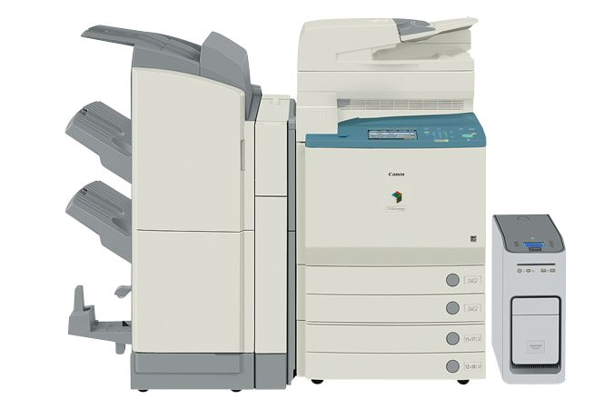

El modelo de fotocopiadora C5185 a color es una solución multifuncional digital que permite a los usuarios de color la salida de documentos en blanco y negro a velocidades de impresión alta.
- Color
- Pantalla táctil intuitiva
- Envía imágenes como email